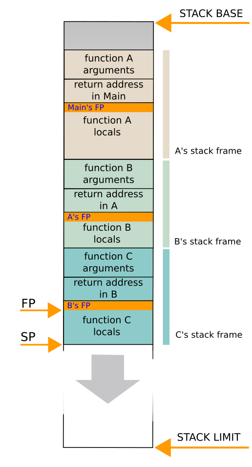
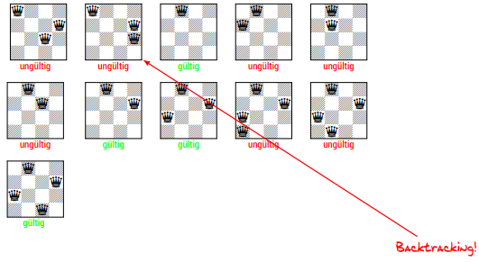
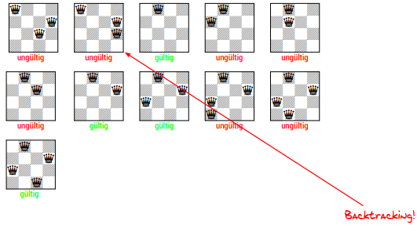

Recursion and Backtracking
Recursion was already covered in previous lectures so you can find additional informations in those blog posts. Now we want to discuss one difference between loops and recursion and therefore we turn our attention to the datastructure stack which is used in many CPU's. The stack is a container for holding data and there are two operations associated with it:
-
push →
push(D, S)adds a data elementDon top of the stackS(and 'overlays' the other elements in S)- usually returns the modified stack
S
- usually returns the modified stack
-
pop →
pop(S)the topmost and only visible element inSget's removed from the top of the stack and allows access to next element below it- usually returns the removed element
D
- usually returns the removed element
A simple hardware implementation is achieved via a stack pointer that always points to the top of the stack (the topmost element). Here's an in depth explanation and a shorter post can be found here.
 Cite from the second link:
When a call is made one method of passing arguments to a function is to push the data onto the stack along with the address of the program statement execution must return to when the function has completed its work. This stack is referred to as the call stack or sometimes the machine stack. A specific CPU register, the stack pointer (SP), may be provided to manage it. In this case a call function instruction says: push the return onto the stack and jump to the function address, making that part of the pushing automatic.
In the majority of cases the call stack grows downwards in memory giving local variables a positive offset from the SP. The SP points to the last element put on the stack not the next free space so it is decremented down before data is pushed on. It is usual to discuss the depth of function calls meaning the number of calls made before a return starts the climb back up to calls higher in the calling hierarchy. An upside down stack fits well with this view:
When called the first action function code takes is to push the old value of another CPU register, the frame pointer (FP), onto the stack. The current value of the SP is then stored in the FP allowing modification of the SP to make space on the stack for any additional local variables the function has.
On a return from a function the value of the SP is restored from the FP and the FP gets its old value back, popped off the stack. Lastly, a return instruction in the machine code tells the CPU to send execution back to the instruction address stored on the stack by the call and currently referenced by the SP. Thus the FP and the SP work together to walk up and down the stack.
The blocks of memory on the call stack for each individual function call are stack frames. Function local variables that cannot be held in registers because they are too big to fit or because those registers may be used by the callee when that function calls another function are put on the stack. Large return items can be passed back on the stack but more usually the return or a reference to it is passed in a CPU register. Thus the availability of this storage space makes nested function calls possible.
Recursion vs Iteration
| Recursion | Iteration |
|---|---|
| recursive calls of a subroutine(Unterprogramm) | execution of a set of instructions of an iteration step |
| parameters of the subroutine are modified and tested for a break condition | iterations usually limited via counter variable or a set |
| processed elements are stored implicitly on the stack (subroutine params) | processed elements elements have to be stored explicitly |
| access to elements is limited to current component in the active subroutine | access to elements is arbitrary |
| corresponds to the function model | corresponds to the state model |
Design of Recursive Algorithms
There are at least two cases which have to be handled in every recursive algorithm
- exit/break from the recursion
- recursive call
In general there are two approache to craft recursive algorithms:
-
abstraction
- drafting of a specific solution to a specific problem instances → draft more solutions and make use of the ones already existing → recognize similarities → encapsulate/summarize those to a universal solution (abstraction)
-
leap of faith
- assumption that the function/procedure is already working and use that for a smaller subproblem
Fibonacci Numbers
We already got to know the Fibonacci Numbers previously:
// Computes the n-th fibonacci number
long fib(long n) {
if (n == 0) return 0;
if (n < 3) return 1;
return (fib(n-1) + fib(n-2));
}
Regularity (Regelmäßigkeit):
We can recognize that the next element in the fibonacci sequence is the sum of the previous both fibonacci numbers. So \(a_{n+2} = a_n + a_{n+1}\).
Defaults (Standardfolge):
We set a0 = 0 and a1 = 1 and get the following sequence: 0, 1, 1, 2, 3, 5, 8, 13, 21, 34, 55, …
However the fibonacci sequence is an example where recursion should not be used since the call stack will get pretty large and it is totally solvable with iterations.
// Computes the n-th fibonacci number
long fib(long n) {
long* fnum = malloc((n+1) * sizeof(long));
long res;
if (n == 0) return 0;
fnum[0] = 0;
fnum[1] = 1;
for (int i = 2; i <= n; ++i) {
fnum[i] = fnum[i-1] + fnum[i-2];
}
res = fnum[n];
free(fnum);
return res;
}
The complexity of this solution with a loop is \(\Theta(n)\), while the complexity of the solution with recursion was \(\Theta(c^n)\) with c > 1.
Towers of Hanoi
Now we'll turn our attention to a problem which can be well represented with recursion to demonstrate the principle of solutions. The tower of hanoi is a mathematical game/puzzle consisting of three rods and a number of differently sized disk on one rod which can slide onto any rod under the following rules:
- only one disk can be moved at a time
- each move consists of taking the upper disk from one of the stacks and placing it on top of another stack or an empty rod
- no larger disk may be placed on top of a smaller disk
This is the pseudo code to solve the towers of hanoi:
require: tower with height n at place A;
ensure: tower at place C ^ obey rules;
procedure MOVE-TOWER(height, goal)
if height == 0 then
return
end if
MOVE-TOWER(height-1, aux_place) // auxiliary place/Hilfsplatz
move last_ring to goal
MOVE-TOWER(height-1, goal)
end procedure
- Move part of the tower with height n-1 from the start rod to the auxiliary rod (via the goal rod)
- Move the last/bottom disk from the start rod to the goal rod
- Move part of the tower with height n-1 from the auxiliary rod to the goal road (via the start rod)
→ The minimal number of moves required to solve a Tower of Hanoi puzzle is 2n - 1, where n is the number of disks.
Backtracking
To illustrate an use case for backtracking we'll turn our attention to the Eight Queens Puzzle (Damenproblem), which is the problem of placing eight chess queens on an 8×8 chessboard so that no two queens threaten each other. Thus, a solution requires that no two queens share the same row, column, or diagonal. The eight queens puzzle is an example of the more general n queens problem of placing n non-attacking queens on an n×n chessboard, for which solutions exist for all natural numbers n with the exception of n=2 and n=3.
A general algorithmic approach to get a solution could look like this:
- Put a queen in the the first row and first column
- Put another quuen in the next row and in the first column
- Move the the second queen right until she's in an allowed position (not possible to be attacked)
- Repeat from Step 2 until:
- all 8 Queens are placed → Solution
- no valid field can be found in the row for a queen → if this is the case then the previous queen is treated as invalid as well so that that one is moved right as well (when there is no valid position for the previous queen, then the queen previous to the previous one will be moved in search for a new valid place further to the right and so on…)
This approach where a partial solution is discarded to continue with a previous partial solution is called backtracking.
From wikipedia:
Backtracking is a general algorithm for finding all (or some) solutions to some computational problems, notably constraint satisfaction problems, that incrementally builds candidates to the solutions, and abandons a candidate ("backtracks") as soon as it determines that the candidate cannot possibly be completed to a valid solution.
The classic textbook example of the use of backtracking is the eight queens puzzle, that asks for all arrangements of eight chess queens on a standard chessboard so that no queen attacks any other. In the common backtracking approach, the partial candidates are arrangements of k queens in the first k rows of the board, all in different rows and columns. Any partial solution that contains two mutually attacking queens can be abandoned.
Backtracking can be applied only for problems which admit the concept of a "partial candidate solution" and a relatively quick test of whether it can possibly be completed to a valid solution. It is useless, for example, for locating a given value in an unordered table. When it is applicable, however, backtracking is often much faster than brute force enumeration of all complete candidates, since it can eliminate a large number of candidates with a single test.
If the backtracking has to be done until before the first queen then there is no solution. Backtracking is often used together with recursion but is however an indepent principle.
 

The above solution is not the only one. If there's a need for more (or all) solutions, they have to be saved and then backtracking needs to be triggered.
Look at chapter 9 slides 31f. for a pseudo code and C implementation of the 8x8 queens problem